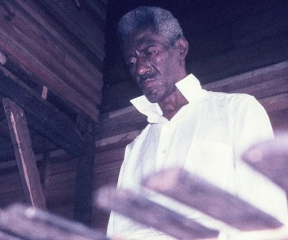
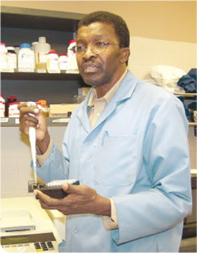
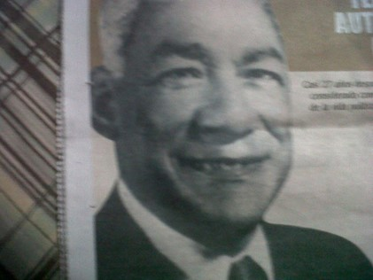
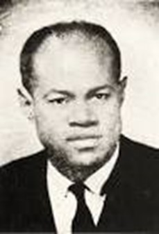
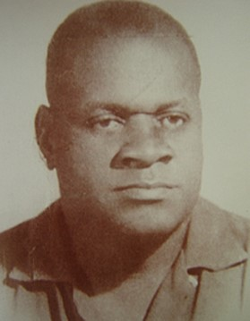
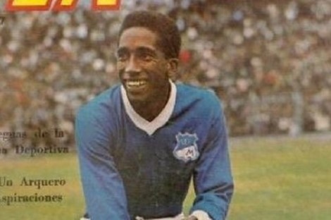
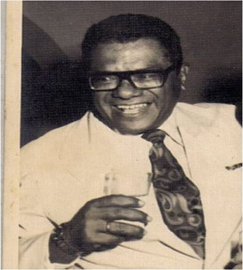

Personajes De Buenaventura
RESPRESENTANTES DE LA HISTORIA DE BUENAVENTURA
Buenaventura cuenta con personajes respesentativos en cada uno de los campos profesionales y que han dejado legado a través de la historia .
- TEOFILO ROBERTO POTES (1917-1975)
El maestro del FOLCLOR. Logró con sus investigaciones llamar la atención hacia la identidad cultural de todo el Litoral. Nació en el río Anchicayá (Buenaventura) el 1 noviembre de 1917 y murió el 17 de abril de 1975. Hombre de figura espigada, vestía siempre de blanco, a menudo descalzo o con rústicas abarcas, siempre educado en sus maneras, conocedor profundo y agudo del folclor del Litoral Pacífico, sabiamente critico cuando las circunstancias le ameritaban, lleno de fino humor en sus conversaciones. Vivió del folclor no solo en el Litoral Pacífico sino también a nivel Nacional, especialmente en el festival Folclórico de Manizales y a través de la Asociación del Litoral Pacífico (ASOLIPA).
(Imagen tomada de SoyBuenaventura)
- RAUL CUERO
Cuero nació en la ciudad de Buenaventura (Costa del Pacifico Colombiano) en 1948 de una familia humilde Es hijo del señor Felix Cuero y la señora Olimpa Rengifo, ya fallecidos, el señor Felix, padre de Raul, fue tripulante de los buques de la Flota Mercante Grancolombiana, empresa de la cual era jubilado, en estos buques recorrió gran parte del mundo.
Raúl Gonzalo Cuero Rengifo es un micro-biólogo e inventor colombiano especializado en biogénesis. Desarrolló una sustancia que despierta los genes dormidos de las células vegetales y genera resistencias al ataque microbacterial y el aumento del contenido proteínico. La patente fue comprada por la Vanson-DuPont. Sus observaciones del suelo de Marte le llevaron a descubrir que este puede ser importante para limpiar la tierra de elementos tóxicos, evidencias que le han ganado un gran prestigio en el mundo científico.
- NESTOR URBANO TENORIO (1914-1984)
Considerado como el personaje más importante de la vida política de Buenaventura. Destacado político y periodista radial, su formación fue autodidacta hasta sus rivales políticos lo apreciaban. Nació el 10 de enero de 1914 en Noanamito, un corregimiento de López de Micay (Cauca), pero a los dos años sus padres, Feliciano y Eustaquia, lo trajeron al puerto de Buenaventura, siendo el tercero de siete hermanos ( Lidubina, Adelmo, Enrique, Narcilo, Socorro y Guillermina).
A él se deben importantes realizaciones en Buenaventura por su labor en el Concejo Municipal y en la Asamblea Departamental del Valle del Cauca, cuerpos de los cuales fue Presidente en varias oportunidades, como también por su labor de apoyo a Buenaventura desde el Congreso de la República. Una de sus obras más valiosas fue la construcción del Colegio de bachillerato Pascual de Andagoya, iniciada con su primera actuación como Diputado a la Asamblea Departamental de 1943; sin duda uno de los hombres más importantes que ha tenido Buenaventura, en donde fincó su base residencial durante 68 de los 70 años que duró su existencia: murió en Cali, el 5 de diciembre de 1984.
- DIEGO LUIS CÓRDOBA
Diego Luis Córdoba fue un abogado y político colombiano, fundador del Departamento de Chocó. Nacido el 21 de julio de 1907 en Neguá, Chocó, entonces perteneciente al departamento de Antioquia, falleció el 1 de mayo de 1964 en Ciudad de México.
Realizó sus estudios primarios y secundarios en Quibdó y Medellín, y tras estudiar Derecho en la Universidad y la Universidad Nacional de Colombia, se convirtió en el primer abogado chocoano. Durante su estadía en Bogotá como estudiante de Derecho se convirtió en uno de los más importantes líderes estudiantiles del Partido Liberal, en el que empezó a destacar como representante del ala socialista.
- MAESTRO PETRONIO ALVAREZ
El músico colombiano Patricio Romano Petronio Álvarez Quintero nació el 1 de octubre de 1914, en la isla de Cascajal, cerca de Buenaventura, puerto del que en vida fue un enamorado y le inspiró su canción más conocida en la actualidad: “Mi Buenaventura”.
Durante su infancia la música se convirtió en su principal medio de expresión, dedicándose a aprender a tocar guitarra antes de cumplir los 20 años de edad. En 1935 creó el conjunto musical “Buenaventura”, y aunque la música del pacífico fue su principal pasión, tuvo que dedicarse a oficios como el de notario y más adelante, como primer maquinista de la locomotora “La Palmera” de los Ferrocarriles Nacionales, hoy conservada como monumento nacional en Cali.
Este intérprete de sones, milongas, bambucos y currulaos, murió el 10 de diciembre de 1966 en Cali, a los cincuenta y dos años. En su honor se le dio el nombre al Festival de Música del Pacifico “Petronio Álvarez”, que se celebra anualmente en la ciudad de Cali.
- DELIO “MARAVILLA” GAMBOA
Delio "Maravilla" Gamboa Renteria (Nacido en Buenaventura, Valle del Cauca, Colombia, el 28 de enero de 1936) es un ex-futbolista colombiano, uno de los mejores de la historia del país.
Durante su infancia la música se convirtió en su principal medio de expresión, dedicándose a aprender a tocar guitarra antes de cumplir los 20 años de edad. En 1935 creó el conjunto musical “Buenaventura”, y aunque la música del pacífico fue su principal pasión, tuvo que dedicarse a oficios como el de notario y más adelante, como primer maquinista de la locomotora “La Palmera” de los Ferrocarriles Nacionales, hoy conservada como monumento nacional en Cali.
Jugador de fútbol colombiano, puntero izquierdo y centro delantero. Comenzó su carrera a los 19 años en el fútbol aficionado con la Selección del Valle del Cauca donde salió campeón nacional departamental en 1956 con la famosa "llave negra" al lado de Marino Klinger y Alberto "Cóndor" Valencia y llegó a tener fama en todo el país con esta escuadra, la más recordada de cuantas selecciones departamentales hubo en el fútbol colombiano.
- EUSEBIO MUÑOZ PEREA (1927-1990)
Abogado y político. Nació en Guapi el 2 de marzo de 1927 y asesinado el 13 de agosto de 1990 . Fueron sus padres don Mario Muñoz Rosero y doña Rosa Perea de Muñoz. Fue el mayor de siete hermanos Rafael, Egdelina, Ofelia, Julio, Luis Yesid Y Nelson. Se casó el día 11 de febrero de 1969, con doña Doris Amira Louis fallecida el 18 de abril del año 2002 en la ciudad de México. Sus hijos Mario Anuar Muñoz Louis (q.e.p.d) y el doctor Roberto Muñoz Louis actualmente radicado en república dominicana lo mismo Dignori Roció, el doctor Carlos Alfonso y Esther.
Realizo sus estudios primarios en la ciudad de Buenaventura. En la normal de Pasto obtuvo el título de maestro normalista, el 18 de agosto de 1948; dedico parte de su vida a la enseñanza; fue profesor brillante y polémico. Sus estudios superiores los realizo en la universidad libre de Bogotá la cual le confirió el título de doctor en Derecho y Ciencias Políticas, el 16 de julio de 1953. Hizo cursos de postgrados en Administración, Economía y en lo que fue su fuerte en derecho laboral y penal.
